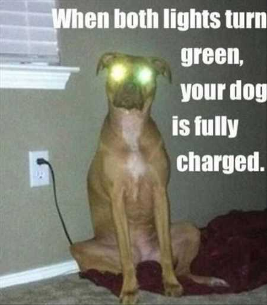

EMOTION TRACKING RESULTS
Affectiva JS SDK CameraDetector to track different emotions.
Instructions
Press the start button to start the detector.
When a face is detected, the website will cater images due to your current mood.
Press the stop button to end the detector.
Why so serious?
Good to see you are in a good mood
Hey let me cheer you up!